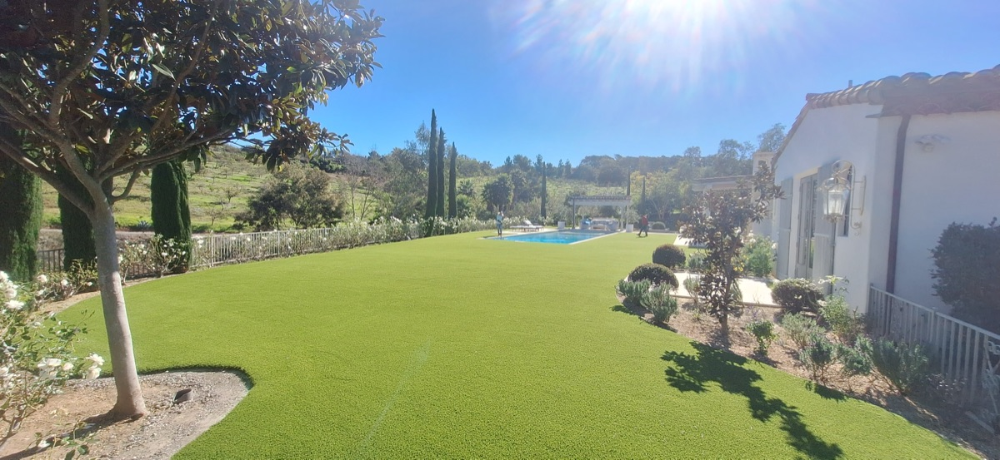
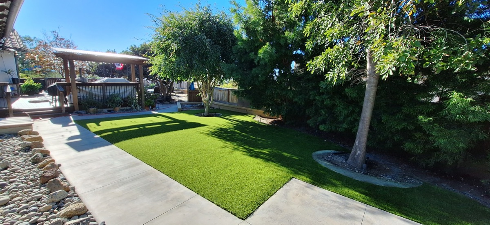
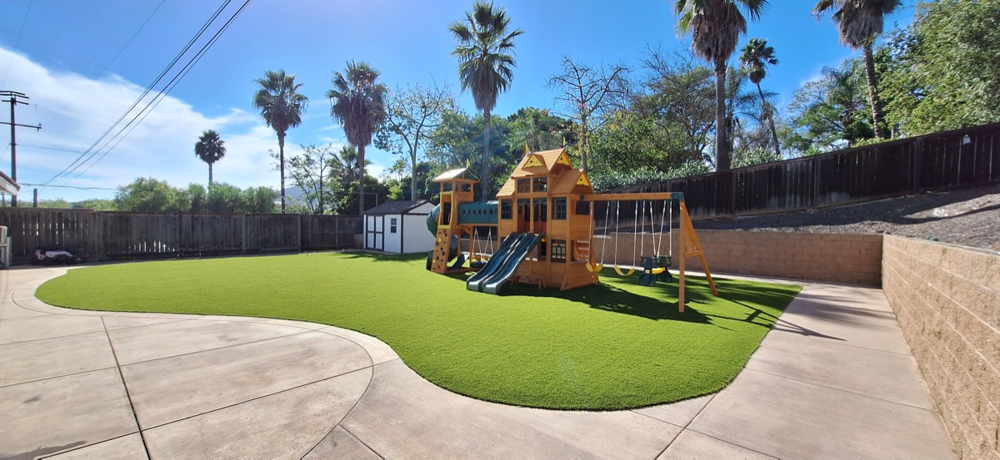
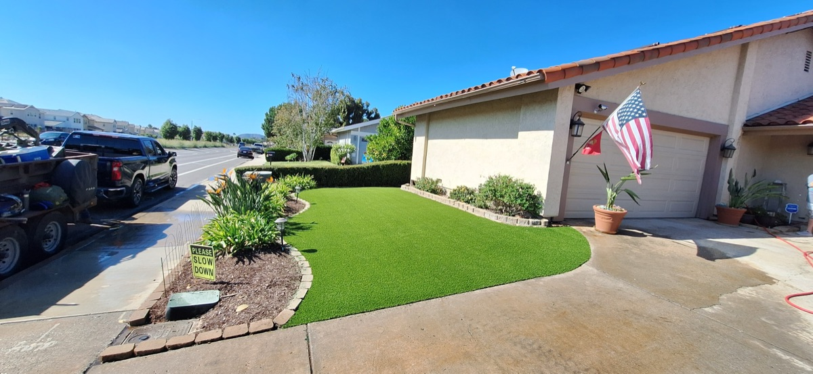

What We Do
Our Services
From front lawns to putting greens, we handle every type of synthetic turf project in North County.

Artificial Turf Installation
Complete turf solutions for any residential or commercial property.

Putting Greens
Custom backyard putting greens with true ball roll.

Pet Turf
Durable, antimicrobial turf designed for pets.

Playground Turf
Safe, cushioned surfaces for play areas and schools.

Front Lawn Conversions
Replace your water-hungry lawn with year-round green.

Backyard/Pool Areas
Mud-free, slip-resistant turf around pools and patios.